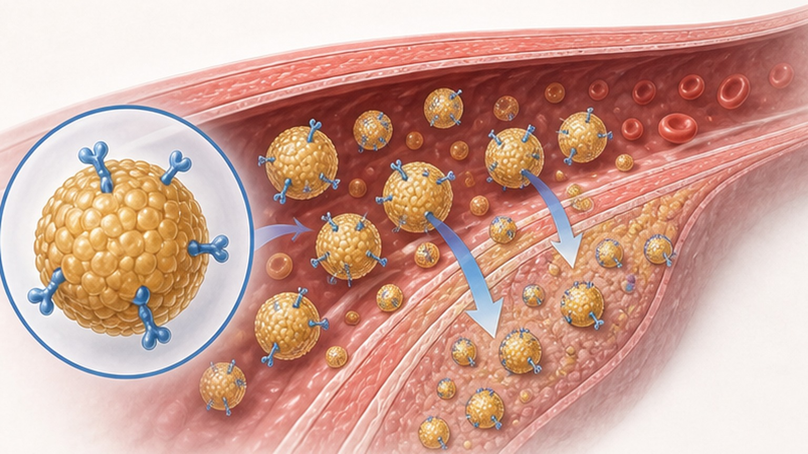
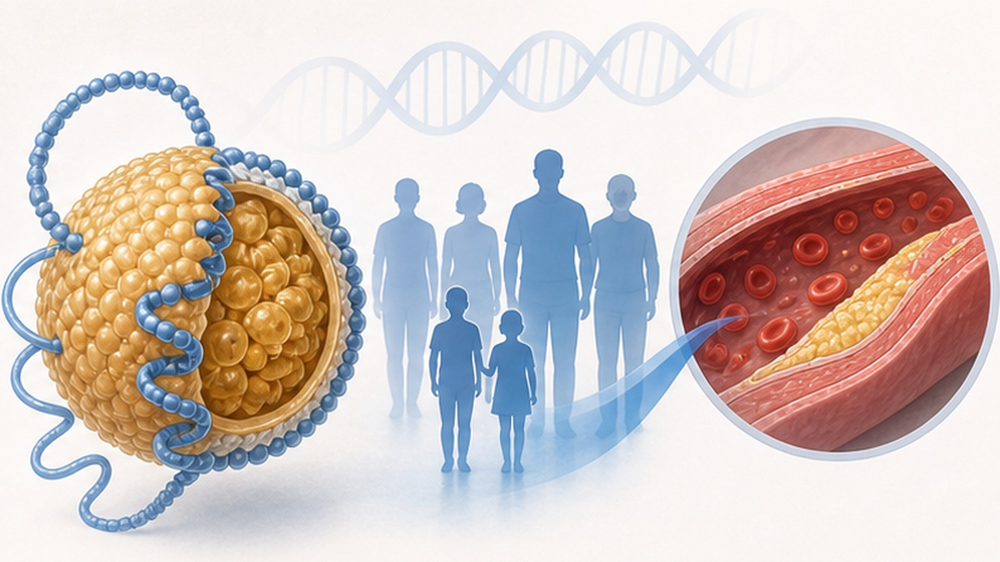
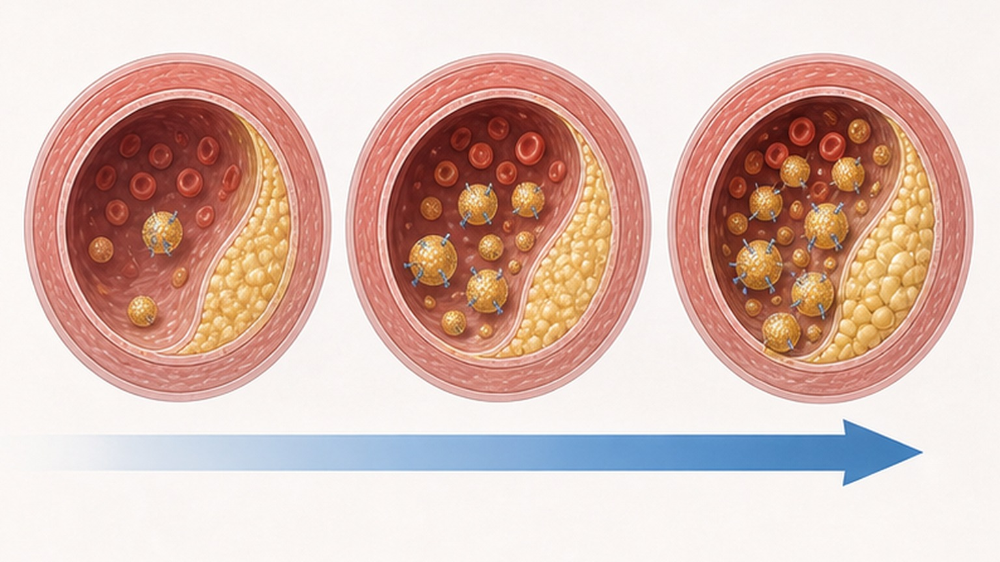
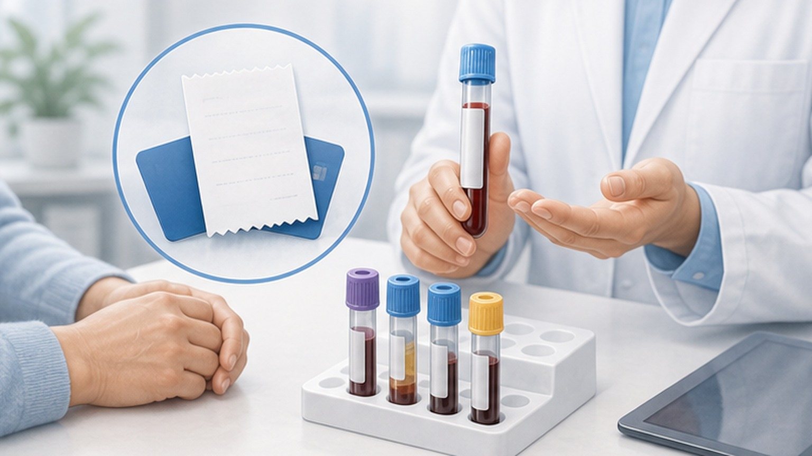

고급 지질 바이오마커,
LDL 너머의 심혈관 위험
ApoB · Lp(a) · Homocysteine — 기존 콜레스테롤 검사가 놓치는 진짜 위험을 알아봅니다
LDL-C가 정상이어도 위험할 수 있습니다
전체 인구의 8~23%에서 LDL-C(콜레스테롤 양)와 ApoB(입자 수)가 일치하지 않습니다
기존 LDL-C 검사의 한계
택배 비유로 이해하는 콜레스테롤 양(LDL-C) vs 입자 수(ApoB)
LDL-C는 택배 상자 안 내용물의 무게를 잰 값이고, ApoB는 혈관에 들어가는 택배 상자의 개수를 직접 센 값입니다.
상자가 많으면 그만큼 혈관벽에 부딪혀 침투할 확률이 높아져 동맥경화로 이어집니다. 특히 small dense LDL(작고 많은 입자)은 같은 LDL-C 수치에서도 위험을 크게 높입니다. 당뇨·대사증후군·비만 환자에서 자주 관찰되며, 전통적 LDL-C 검사로는 찾아낼 수 없습니다. hsCRP(혈관 염증 지표)와 CIMT(경동맥 내중막 두께)도 함께 보면 위험 평가가 더 정확해집니다.
ApoB (Apolipoprotein B) — 나쁜 콜레스테롤 입자 수
모든 죽상경화 유발 지단백 1개당 ApoB 1개가 결합 — 가장 정확한 입자 수 지표

위험도별 ApoB 목표와 약물 효과
위험이 높을수록 더 낮은 목표 — 약물 조합으로 단계적으로 도달합니다
지질단백질(a) (Lp(a)) — 유전적 심혈관 위험인자
90% 이상이 유전으로 결정 — 식이·운동으로 변하지 않으며 평생 1회 검사로 충분합니다

Lp(a) 수치별 위험 분류
≥50 mg/dL부터 고위험, ≥100 mg/dL은 ASCVD 위험이 2배 이상으로 급증합니다

호모시스테인 (Homocysteine) — 한국인의 뇌졸중 연관 인자
심근경색 예방 효과는 미입증, 뇌졸중에서만 의미 있는 감소 효과가 확인되었습니다
한국 검사 비용·보험 급여 안내
실제 진료에서 알아두어야 할 비용과 적용 기준

ApoB vs Lp(a) — 임상적 위치 비교
두 바이오마커는 역할이 다릅니다 — 함께 활용하면 위험 평가가 더 정확합니다
- LDL-C보다 정확한 위험 예측 지표
- 당뇨·대사증후군·고중성지방에서 특히 유용
- 스타틴·에제티미브·PCSK9i로 효과적 감소
- 비용 저렴, 공복 채혈 불필요
- 치료 시작/변경 후 8~12주에 재검 추적
- 이차 치료 목표(secondary target)로 권고
- 90% 이상 유전적으로 결정, 평생 일정
- 전 성인 1회 검사가 Class I 권고 (2026)
- 현재 Lp(a) 특이 승인 치료제 없음
- 혁신 신약 4종 Phase 3 진행 중 (2026~2028 결과)
- 가족 cascade 검사 권고 (1차 친족)
- ≥50 mg/dL → 다른 위험인자 적극 관리
오늘 꼭 기억할 핵심 8가지
진료 시 주치의와 상의해 추가 검사·치료 강도를 함께 결정하세요
고급 지질 바이오마커로
나의 심혈관 위험을 더 정확하게
ApoB · Lp(a) · Homocysteine — 궁금한 점은 진료 시 편하게 말씀해 주세요
광교중앙로 298, 4층
토요일 08:30~13:30
같은 자료를 다시 볼 수 있어요